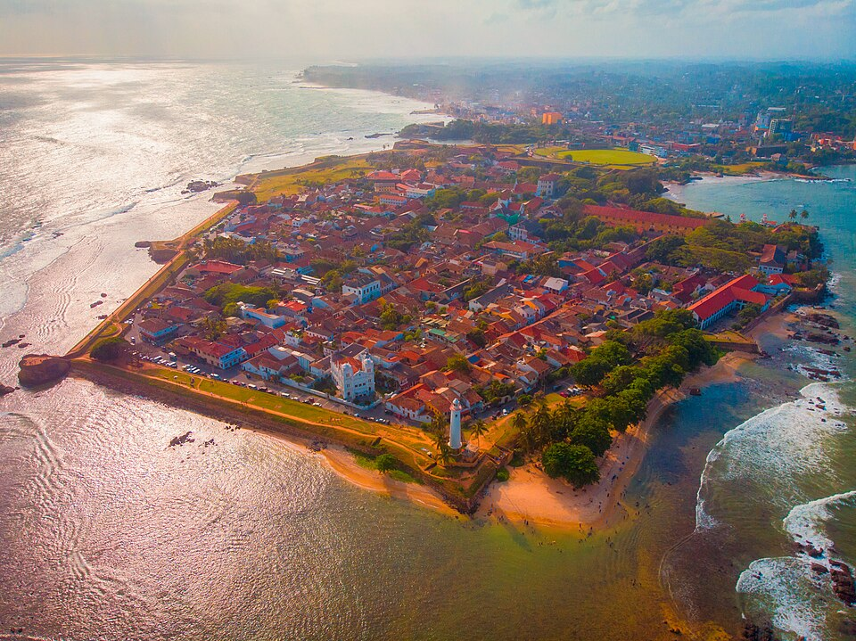

Landmark
Galle Lighthouse
Visit the iconic lighthouse and enjoy beautiful coastal scenery.
View Location →Discover the history, culture, beauty and unforgettable experiences of Galle Fort, Sri Lanka.
Explore Now
DISCOVER OUR HERITAGE
Galle Fort is one of the most famous historical attractions in Sri Lanka. Located on the southern coast, it is known for its colonial architecture, beautiful ocean views and rich cultural heritage.
The Portuguese began building the fort in the 16th century, and the Dutch later expanded it. Today, the Old Town of Galle and its Fortifications are recognized as a UNESCO World Heritage Site.
Discover More →EXPLORE THE DESTINATION
Discover the historical landmarks and beautiful places around Galle Fort.
Visit the iconic lighthouse and enjoy beautiful coastal scenery.
View Location →
Walk through charming streets filled with colonial architecture and shops.
View Location →
Enjoy a relaxing walk along the historic fort walls overlooking the Indian Ocean.
View Location →WHERE TO STAY
Find comfortable places to stay during your visit.
Enjoy premium accommodation, beautiful rooms and quality hospitality.
Explore Hotels →
Discover welcoming guest houses and affordable accommodation options.
Explore Guest Houses →
Experience unique stays and charming boutique accommodation.
Explore Boutique Hotels →TASTE GALLE
Discover delicious food and dining experiences.

Experience traditional Sri Lankan meals and authentic local flavours.
Find Restaurants →
Explore special dining experiences and international cuisine.
Find Dining Places →Enjoy coffee, desserts and relaxing moments in Galle Fort.
Find Cafés →EXPERIENCE GALLE
Make your visit memorable with exciting experiences.
Explore the history and architecture of Galle Fort.
Capture beautiful views, streets and historical buildings.
Discover souvenirs, local crafts and boutique shops.
Enjoy beautiful sunsets from the fort ramparts.
SHOP LOCAL
Discover souvenirs, fashion and Sri Lankan crafts.

Find memorable gifts and souvenirs to take home from Sri Lanka.
Explore Shops →
Discover fashion, handmade clothing and boutique stores.
Explore Boutiques →
Discover Sri Lankan handicrafts and creative local products.
Explore Crafts →PLAN YOUR JOURNEY
Useful information to help you plan your visit.
PHOTO COLLECTION
Explore the beauty of Galle through photographs.


GET IN TOUCH
Interested in discovering Galle Fort? Send us an inquiry.